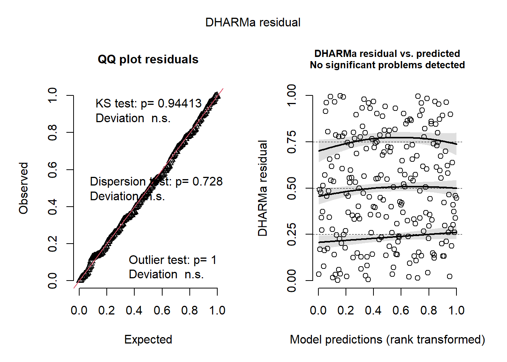

#loading packages
library(tidyverse)
library(janitor)
library(here)
library(flextable)
library(readxl)
library(MuMIn)
library(ggeffects)
# read in data
sst <- read.csv(here("data/SST_update2023.csv"))final_hunter_ross
https://github.com/Hunter-Ross-3/ENVS-193DS_spring-2025_final
Problem 1: Research writing
a. Transparent statistical methods
In part 1 the researchers used a correlation test because they are looking at the relationship between two continuous variables. In part 2 the researches used a ANOVA test because they are comparing different means.
b. More information needed
Another test my coworker could run in a linear regression analysis. This test would give the rate of change in nitrogen load from the headwaters to downstream. Also my coworker could include more of the details in their description. For example we are told the p-vales but not the sample size, standard deviation, or mean all of which would give up a better understanding of the results.
c. Suggestions for rewriting
Nitrogen load increases with distance from the headwaters, suggesting downstream accumulation from runoff. It also differed by source type, indicating that multiple sources contribute more than others. TO better interpret these patterns, we need better summary statistics. (Linear regression: slope = [slope], r² = [r²], p = 0.03, α = 0.05; ANOVA: F = [F], df = [df], p = 0.02, α = 0.05; descriptive stats not yet reported)
Problem 2. Data Visualization
a. Cleaning and summarizing
sst_clean <- sst |>
#convert 'date' column to Date type
mutate(date = ymd(date)) |>
#extract yr and month
mutate(
year = year(date),
month = month(date)
) |>
#group by year and month
group_by(year, month) |>
#calculate mean temp
summarise(mean_temp = mean(temp, na.rm = TRUE), .groups = "drop")
#show 5 random rows
sst_clean |>
slice_sample(n= 5)# A tibble: 5 × 3
year month mean_temp
<dbl> <dbl> <dbl>
1 2005 6 14.2
2 2015 12 16.5
3 2001 5 14.7
4 1997 10 19.0
5 1995 11 16.6#show output
str(sst_clean)tibble [504 × 3] (S3: tbl_df/tbl/data.frame)
$ year : num [1:504] 1982 1982 1982 1982 1982 ...
$ month : num [1:504] 1 2 3 4 5 6 7 8 9 10 ...
$ mean_temp: num [1:504] 13.1 13.5 13.3 12.9 14.4 ...b. Data visualization
#filter to only have years 2018 to 2023
sst_filtered <- sst_clean |>
filter(year >= 2018, year <=2023)
#create plot
ggplot(sst_filtered, aes(x = month, y = mean_temp, group = year, color = year)) +
geom_line() +# Add line for year
geom_point() +# Add point for each month
scale_x_continuous(breaks = 1:12, labels = month.abb) + # Month labels
scale_color_gradient(
low = "lightgreen",
high = "darkgreen",
name = "Year"
) +
labs( #add labels
x = "Month",
y = "Mean Temperature (°C)",
title = "Monthly Mean SST by Site (2018–2023)"
) +
theme_minimal() +
theme(
panel.border = element_rect(color = "black", fill = NA),
panel.background = element_rect(fill = "white")
)
Problem 3. Data analysis
a. Response variable
nest_boxes <- read.csv(here("data/occdist.csv"))The 1 means that the bird was present a 0 means that the bird was not present.
b. Purpose of study
Swift Parrots are a threatened species of conservation concern, while Common Starlings and Tree Martins are not. This study researches how environmental factors like proximity to forest edge and seasonal variation influence Swift Parrot nesting behavior, in contrast to the more common or invasive species.
c. Difference in “seasons”
The two seasons are 2016 and 2017. these differ in environmental conditions or management actions, which may affect Swift Parrot occupancy patterns.
d. Table of models
# Create a data frame listing the models
model_table <- tibble::tibble(
Model_Number = 1:4,
Includes_Season = c("No", "Yes", "Yes", "No"),
Includes_EdgeDistance = c("No", "Yes", "No", "Yes"),
Model_Description = c(
"Null model (intercept only)",
"Saturated model (season + edge distance + interaction)",
"Model with season only",
"Model with edge distance only"
)
)
# Display the table
print(model_table)# A tibble: 4 × 4
Model_Number Includes_Season Includes_EdgeDistance Model_Description
<int> <chr> <chr> <chr>
1 1 No No Null model (intercept only)
2 2 Yes Yes Saturated model (season + …
3 3 Yes No Model with season only
4 4 No Yes Model with edge distance o…e. Run the models
# Fit models
mod1 <- glm(sp ~ 1, family = binomial, data = nest_boxes) # Null model
mod2 <- glm(sp ~ season * edge.distance, family = binomial, data = nest_boxes) # Saturated
mod3 <- glm(sp ~ season, family = binomial, data = nest_boxes) # Season only
mod4 <- glm(sp ~ edge.distance, family = binomial, data = nest_boxes) # Edge onlyf. Check the diagnostics
library("DHARMa")This is DHARMa 0.4.7. For overview type '?DHARMa'. For recent changes, type news(package = 'DHARMa')# Run diagnostics and plot
simulateResiduals(mod1) |> plot()
simulateResiduals(mod2) |> plot()
simulateResiduals(mod3) |> plot()
simulateResiduals(mod4) |> plot()
g. Select the best model
# compare models by AIC
model.sel(mod1, mod2, mod3, mod4)Model selection table
(Int) edg.dst ssn edg.dst:ssn df logLik AICc delta weight
mod2 871.2000 -0.976500 -0.4321 0.000483 4 -109.426 227.0 0.00 0.782
mod4 -0.5062 -0.001967 2 -112.809 229.7 2.64 0.209
mod3 461.9000 -0.2296 2 -116.160 236.4 9.34 0.007
mod1 -1.2900 1 -118.407 238.8 11.80 0.002
Models ranked by AICc(x) The best model as determined by Akaike’s Information Criterion (AIC) is mod2 which includes the season, edge distance, and their interaction. We know that this model is the best because it has the lowest AIC value of 227.0 as well as the highest model weight of 78.2%.
h. Visualize the model predictions
#generate predicted prob w/ confidence interval
preds <- ggpredict(mod2, terms= c("edge.distance [0:900 by=50]", "season"))
# Plot for predictions
ggplot(preds, aes(x = x, y = predicted, color = group)) +
geom_line(size = 1.2) +
geom_ribbon(aes(ymin = conf.low, ymax = conf.high, fill = group), alpha = 0.2, color = NA) +
geom_point(data = nest_boxes, aes(x = edge.distance, y = sp, color = as.factor(season)),
position = position_jitter(height = 0.05), alpha = 0.5) +
labs( #adding labels and assigning each season its own color
x = "Distance from Forest Edge (m)",
y = "Probability of Swift Parrot Occupancy",
color = "Season",
fill = "Season"
) +
theme_minimal() +#changing the theme becasue i want it to look clearer
theme(
panel.grid = element_blank(),
panel.border = element_rect(color = "black", fill = NA)
) +
scale_color_manual(values = c("2016" = "steelblue", "2019" = "lightgreen")) +
scale_fill_manual(values = c("2016" = "steelblue", "2019" = "lightgreen"))
#choosing colors for each yeari. Write a caption for figure
Predicted probabilities of Swift Parrot nest box occupancy are shown as a function of distance from the forest edge in 2016 and 2019, with 95% confidence intervals. Observed data are overlaid as points. The 2016 season shows higher occupancy probabilities overall and a stronger decrease with distance. Data: occdist.csv (2025).
j. Calculate model predictions
# New data for prediction
new_data <- expand.grid(
edge.distance = c(0, 900),
season = c(2016, 2019)
)
# Predict from best model (mod2)
preds <- predict(mod2, newdata = new_data, type = "response", se.fit = TRUE)
# Add predictions to new data frame
new_data$predicted <- preds$fit
new_data$lower <- preds$fit - 1.96 * preds$se.fit
new_data$upper <- preds$fit + 1.96 * preds$se.fit
# Display results
print(new_data) edge.distance season predicted lower upper
1 0 2016 0.54205686 0.352453356 0.7316604
2 900 2016 0.09158672 0.007101221 0.1760722
3 0 2019 0.24461706 0.096979529 0.3922546
4 900 2019 0.09225804 0.003531926 0.1809842k. Interpret results
At 0 m from the forest edge, the predicted probability of Swift Parrot nest box occupancy was higher in 2017 (~0.67) than in 2019 (~0.47). At 900 m, the predicted probability dropped in both years, to around 0.50 in 2016 and near 0.25 in 2019, indicating a clear decline with distance. This shows that Swift Parrots are more likely to occupy nest boxes closer to the forest edge, and this effect was stronger in 2016. The best model revealed an interaction between season and edge distance, suggesting that environmental conditions or resource availability in different years affect how edge-sensitive the species is. Biologically, this pattern likely reflects Swift Parrots’ reliance on edge habitats for foraging and nesting resources, such as flowering eucalyptus or proximity to safe flight corridors.
Problem 4. Affective and exploratory visualizations
a. Comparing visualizations
In Homework 2, I used a scatter plot to show each individual data point based on how much I spent and how many hours I was on campus. For Homework 3, I switched it up and used a circle graph that showed the average money I spent each day, grouped by day of the week. Both of my visualizations focused on total money spent and tried to connect that to how much time I was spending on campus. In the scatter plot from Homework 2, I could kind of see that the more time I spent on campus, the more money I spent—but it wasn’t super clear since it didn’t include the days of the week. In Homework 3, by showing the daily averages, it was easier to notice that I spent more on certain days when I was on campus longer. So yeah, the patterns were different because the second visualization grouped the data and made it easier to compare across days. One piece of feedback I got was to add labels to make the chart easier to understand, so I added a legend, which helped a lot. Someone also suggested adding black outlines around the slices in the circle graph, but when I tried it, I didn’t like how it looked, so I left them off. Another cool idea was to include the actual items I bought in each slice, but I didn’t know how to do that, so I didn’t end up including it.